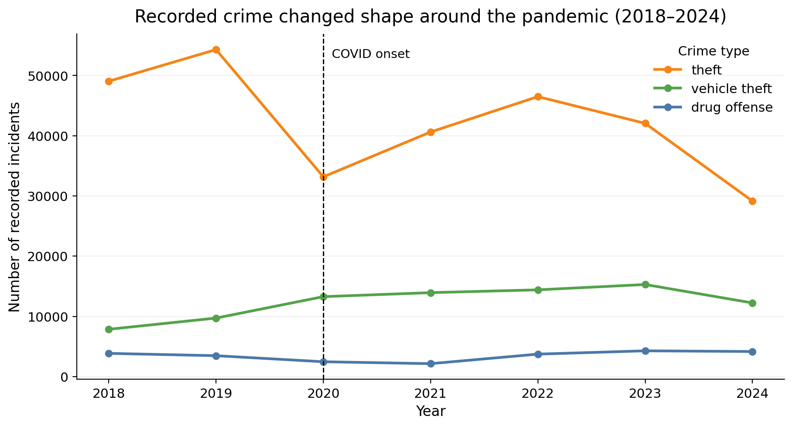

When COVID-19 hit in 2020, daily life in cities changed dramatically. Mobility dropped, businesses closed, and public spaces emptied. A natural question follows: what happened to crime?
In this data story, I use the San Francisco Police Department (SFPD) incident dataset, which contains detailed records of reported crimes (type, time, location, district) from 2018 to 2024. Importantly, this dataset captures recorded incidents, not all crime, meaning it reflects both criminal activity and policing/reporting practices.
I focus on three common crime categories — theft, vehicle theft, and drug offenses — and study how they evolved across three dimensions: how much crime happened (time), where it happened (space), and when during the day it occurred.
The key question is therefore: did COVID-19 simply reduce crime, or did it reshape its structure across time, space, and daily routines?
The main takeaway is that COVID-19 did not uniformly reduce crime. Instead, it created a structural redistribution: crime shifted between categories, remained concentrated in specific districts, and changed its daily timing patterns.

Figure 1. Recorded incidents for theft, vehicle theft, and drug offenses (2018–2024). The vertical line marks the onset of COVID-19. Theft drops sharply in 2020, while vehicle theft increases afterward, showing that crime categories responded differently to the pandemic.
Figure 1 shows a clear structural break in 2020. Theft, which had been increasing before the pandemic, suddenly drops. In contrast, vehicle theft rises steadily after 2020, while drug offenses follow a longer downward trend.
The key insight is that the curves do not move together. If COVID-19 had simply reduced crime, all categories would decrease at the same time. Instead, the figure shows a redistribution across crime types.
This suggests that different crimes depend on different social conditions. Theft is strongly tied to dense public activity (shops, tourism, commuting), which collapsed during lockdowns. Vehicle theft, on the other hand, may have increased due to more cars being parked for longer periods and reduced street surveillance.
This raises the next question: if crime changed in magnitude and type, did it also change where it happens in the city?
Figure 2. Share of yearly vehicle theft incidents across San Francisco districts (2018–2022). While overall levels change, the same districts remain the main hotspots over time.
The map reveals a strong spatial pattern: crime is not evenly distributed across San Francisco. A small number of districts consistently account for a much larger share of vehicle theft incidents.
What is striking is the stability of these hotspots. Even as total crime levels change after COVID, the same districts remain dominant. This means that the pandemic did not fundamentally redistribute crime across space.
This is an important contrast with Figure 1. While crime changed across categories, it did not change much across locations. In other words, COVID affected how much crime was recorded more than where it was concentrated.
This suggests that geographic patterns are driven by more stable structural factors, such as urban density, commercial areas, and transport hubs, which remain relatively unchanged even during a major disruption.
If crime stayed concentrated in the same places, another question emerges: did the pandemic change when during the day crime happens?
Figure 3. Hourly distribution of crime before, during, and after COVID-19. Crime follows a daily rhythm, but peak times shift across periods.
Figure 3 shows that crime follows a strong daily rhythm. Across all categories, incidents are relatively low in the early morning, increase from midday, and peak in the afternoon or evening.
This reflects the fact that crime is closely linked to human activity: when people move, gather, and interact, opportunities for crime increase.
However, the timing of these peaks changes during the COVID period. Some categories show sharper or shifted peaks compared to pre-COVID patterns, suggesting that disruptions to commuting, work schedules, and nightlife affected when incidents occurred.
The important takeaway is that even though the overall shape of the daily cycle remains, the timing within that cycle shifts. This reinforces the idea that COVID did not eliminate crime patterns but reshaped them within existing structures.
This analysis shows that COVID-19 acted as a turning point in San Francisco crime patterns. Rather than simply reducing crime, it reshaped it across multiple dimensions.
First, crime changed across categories: theft declined sharply, while vehicle theft became more prominent. Second, crime remained geographically concentrated, with the same districts acting as persistent hotspots. Third, daily timing patterns shifted, reflecting changes in routines and urban activity.
Together, these results support a single main takeaway: COVID-19 did not reduce crime uniformly — it redistributed it across type, time, and timing.
However, these findings should be interpreted with caution. The dataset captures recorded incidents, not all crime. Changes in reporting behavior, policing strategies, and enforcement may also influence the observed patterns.
In short, the pandemic did not make crime disappear. It changed how, where, and when it appears in the city.
This analysis is based on the San Francisco Police Department incident dataset, covering the period 2018–2024. The dataset includes information on incident category, date, time, and police district.
Crime categories were selected to represent common urban crimes (theft, vehicle theft, and drug offenses). Yearly trends were computed using aggregated counts. Geographic patterns were analyzed using district-level shares to allow comparison across years. Hourly patterns were normalized to show the relative distribution of incidents within each period.
The analysis divides the data into three periods: pre-COVID (before 2020), COVID (2020–2021), and post-COVID (after 2021).
External context: Changes in crime patterns during COVID have been widely reported in cities worldwide. Reductions in theft have been linked to decreased mobility, while increases in vehicle-related crimes have been associated with changes in parking behavior and reduced street surveillance.